Ekonomi Desa
Ekonomi, Potensi & Visi Desa
Pertanian, perkebunan, perikanan dan tenun menjadi tulang punggung ekonomi desa — ditambah potensi pariwisata, BUMDes dan visi Desa Mandiri 2042.
Pertanian, perkebunan, perikanan dan tenun menjadi tulang punggung ekonomi desa — ditambah potensi pariwisata, BUMDes dan visi Desa Mandiri 2042.
Mayoritas warga bergerak di pertanian dan perkebunan; selebihnya perikanan, kelautan, pertukangan, pedagang, pegawai dan wiraswasta.
Bercocok tanam sistem tradisional bergantung musim hujan. Kelompok petani sayur sudah memakai sistem penyiraman pada kemarau di Dusun Mokora dan Kakado — kacang panjang, sawi, kangkung dan terung.
Tanaman pangan lokal: jagung, ubi kayu, ubi kano dan opa. Tanaman buah (pepaya, mangga, nangka, belimbing, jambu, jeruk) tumbuh di halaman dan sepanjang jalan sebagai sumber tambahan ekonomi.
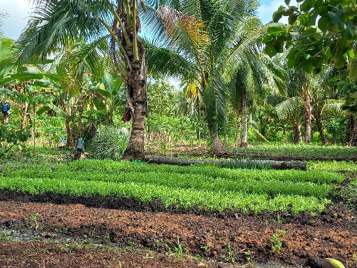
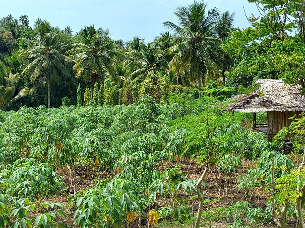
Komoditi utama kopra dan jambu mete. Kopra dari empat kali panen kelapa rata-rata 120.000 ton per tahun (data dokumen), dijemur hingga kering lalu dikirim ke Bau-Bau atau dibeli pengepul. Jambu mete berbuah sekali setahun.
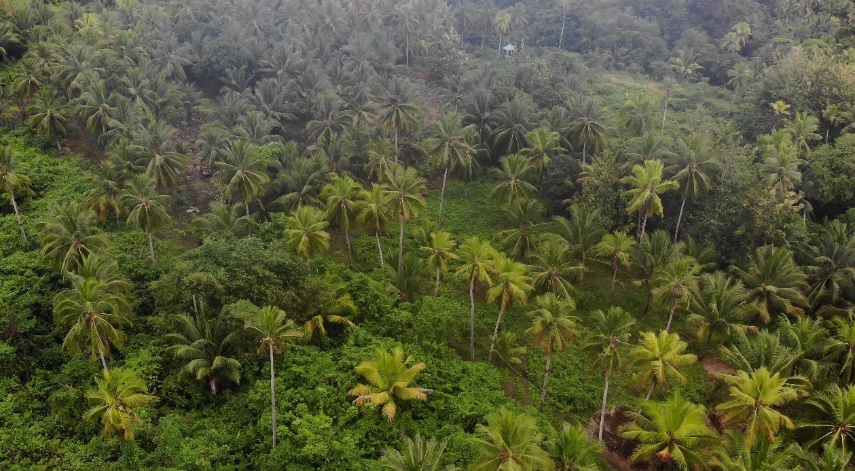
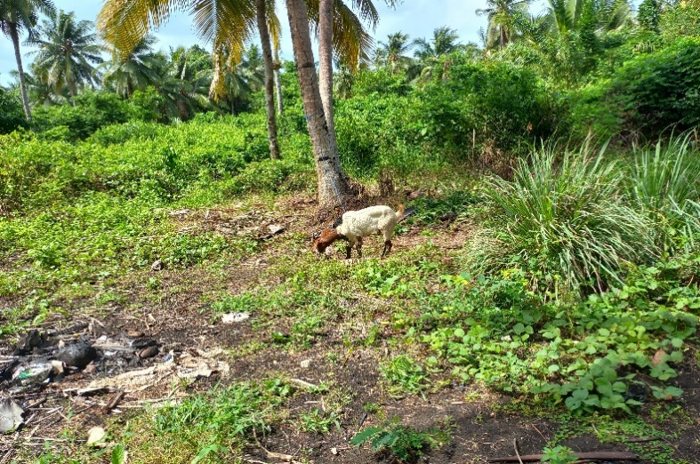
Hampir semua laki-laki desa terampil menangkap ikan dengan pancing, jaring dan bubu. Ada pula penangkap kepiting bakau serta pengambil kerang (kalantue dan koroe). Ibu-ibu nelayan membentuk kelompok budidaya kepiting bakau dengan dukungan Forkani–YKAN.
Hampir semua rumah tangga memiliki ayam kampung, sebagian ayam potong dan sapi dengan sistem bagi hasil. Sapi digembalakan di lahan kosong barat dan selatan; kambing dikandangkan di samping/belakang rumah atau kebun.
Penjualan bersifat musiman pada Idul Adha dan Idul Fitri.
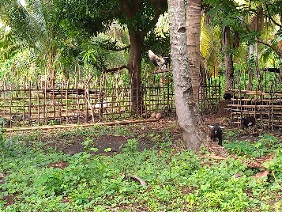
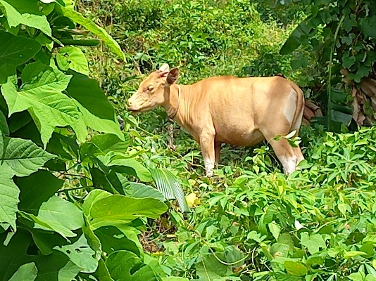
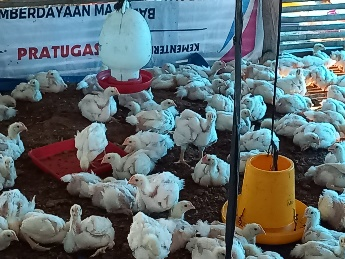
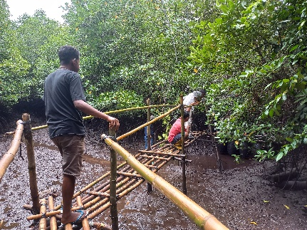
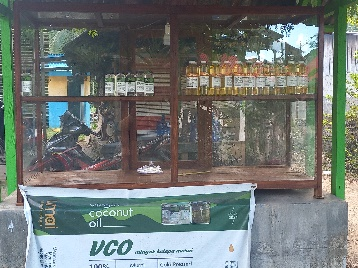
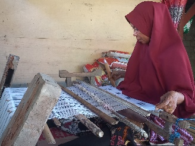
Rumah berbaris di kiri-kanan jalan, umumnya masih rumah panggung kayu dan papan karena lebih nyaman serta memudahkan petani dan nelayan menyimpan alat dan hasil panen.
| Musim / Alat | Jan | Feb | Mar | Apr | Mei | Jun | Jul | Ags | Sep | Okt | Nov | Des |
|---|---|---|---|---|---|---|---|---|---|---|---|---|
| Timur | ● | ● | ● | ● | ● | |||||||
| Barat | ● | ● | ● | ● | ||||||||
| Panca roba | ● | ● | ● | |||||||||
| Hujan | ●● | ●● | ● | ●●● | ●●● | ● | ● | ● | ||||
| Kemarau | ● | ● | ● | ● | ||||||||
| Jaring / Ommu & Kuu | ● | ● | ● | ● | ● | |||||||
| Mancing | ●● | ●● | ● | ● | ||||||||
| Kalantue | ● | ● | ● | ● | ● | ● | ● | ● | ● | ● | ● | ● |
| Koroe | ● | ● | ● | ● | ● | ● | ● | ● | ● | ● | ● | ● |
| Hefossi | ● | ● | ● | ● | ● | ● | ● | ● | ||||
| Kepiting Bakau | ● | ● | ● | ● | ● | ● | ● | ● | ● | ● | ● | ● |
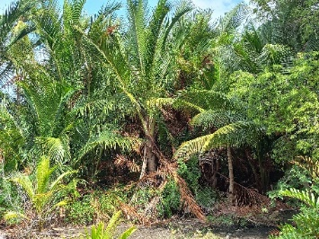
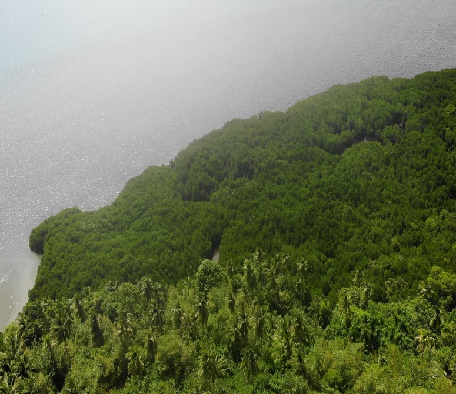
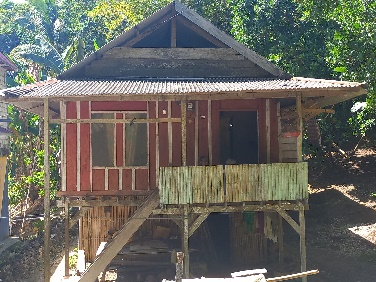
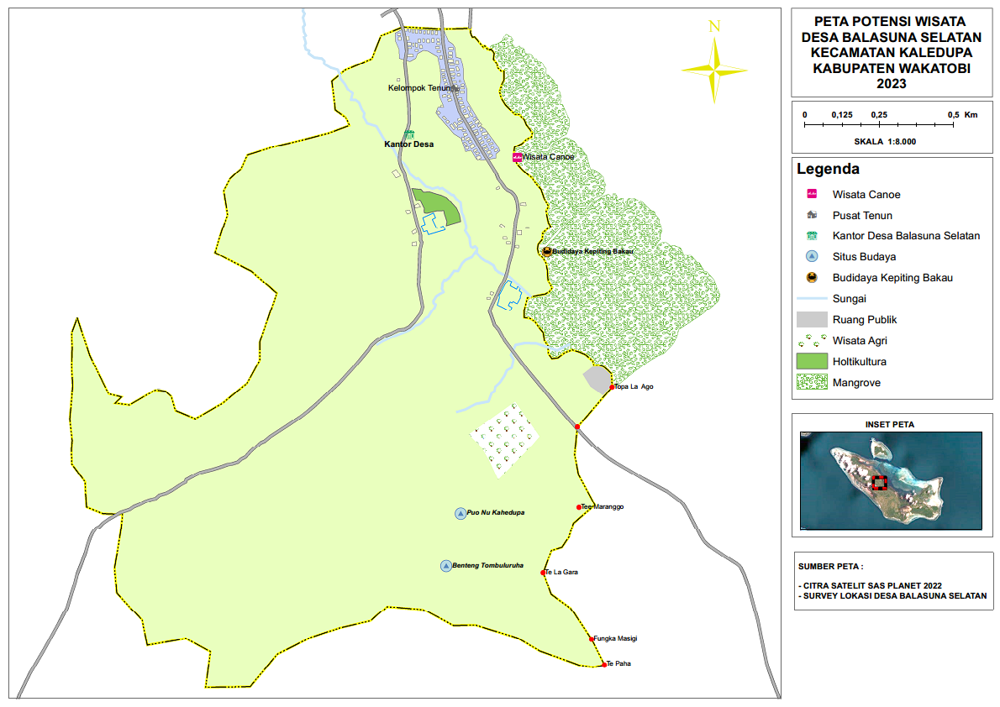
Potensi alam melimpah, namun kapasitas sumber daya manusia dan kelembagaan perlu terus diperkuat.
“Terwujudnya Desa Balasuna Selatan sebagai sentra pertanian yang berkelanjutan.”